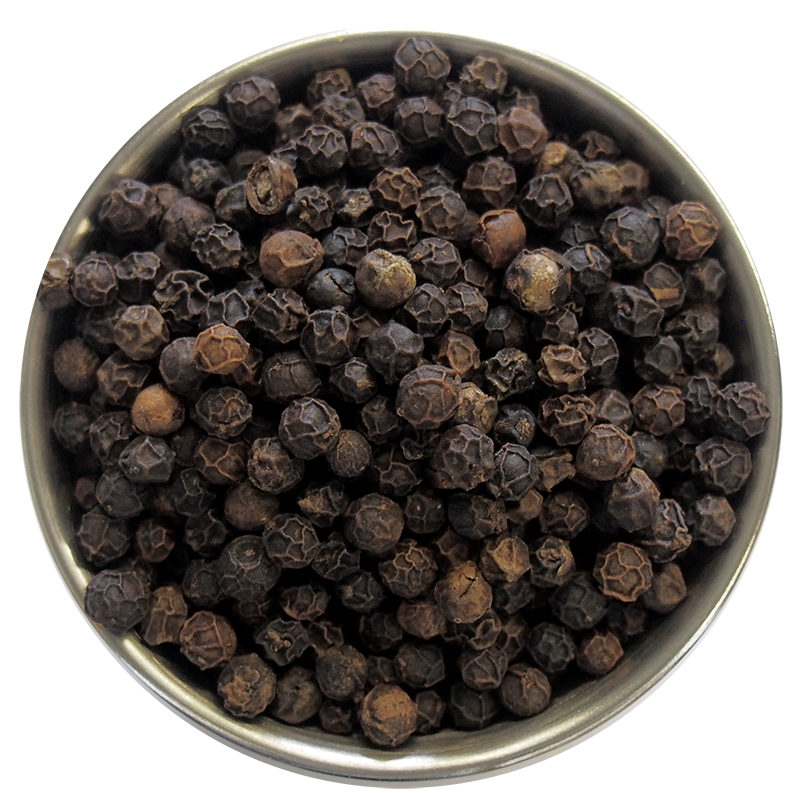
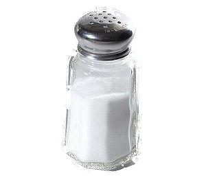

BURGER
Ingredients:

POTATO
3 PIECE

ONION
1 PIECE
GINGER
1/2 SPOON

SPIECE
ALL MIXTURE
FLOUR
1 cups

PEPPER
1/2 SPOON

SLAT
1/2 SPOON

MEAT
500 gms
CARROT
2 PIECE
SUGAR
1 SPOON

BREAD
2 PIECE
- Step 1- Preparing breadcrumbs
- Break 6 to 7 slices of breads and add in a mixer or dry grinder. Grind to a fine consistency. Take the bread crumbs in a plate or bowl. Keep aside.
- Step 2- Preparation for vegetable patty mixture
- Now rinse and steam 3 large potatoes, 1 medium carrot, 8 to 9 french beans and 1/3 cup peas till they are completely cooked. You can cook or steam the veggies in a pressure cooker for 3 whistles. You can also cook in a pan or in an electric cooker. Once cooked drain well the veggies. There should be no water in them. Peel and roughly chop the potatoes when warm. Also peel the cooked carrots and finely chop them. Finely chop the french beans too. Then mash the potatoes with a potato masher. When the mashed potatoes cools down completely, add the chopped carrots and beans. Also add the steamed peas. Mix everything well and keep aside. Then finely chop 1 medium sized onion and crush 4 to 5 garlic, 1/2 inch ginger and 1 or 2 green chilies. Keep aside. You can crush them together or separately.
- Step 3- Making vegetable patty mixture for veg burger
- Heat 1 tsp oil in a pan. Add the ginger-garlic-green-chili paste. Saute for some seconds till the raw aroma of ginger and garlic goes away. Add the chopped onions. Stir and saute till the onion turns translucent or light brown. Add 1/2 tsp coriander powder, 1/2 tsp cumin powder, 1/2 tsp garam masala powder, 1/2 tsp red chili powder or cayenne pepper and 1/4 tsp turmeric powder. Stir and mix the spices with the rest of the mixture. Switch off the flame and then add the chopped coriander leaves or parsley. Stir very well and add this sauteed onion mixture to the mashed veggies. Add salt and 5 to 6 tbsp bread crumbs. Begin to mix very well. Keep the veg patty mixture aside. Check the seasoning and add more of the spice powders and salt if required. Make the veg patties as same as the size of the burger buns. Keep aside. If the mixture looks soft or crumbles, then do add some more breadcrumbs and mix everything again very well. Cover the veg patties and keep aside.
- Step 4- Preparing mayonnaise dressing and toppings for veg burger
- Take 3 tbsp mayonnaise in a small mixing bowl. Add 1/2 tsp mustard seeds, crushed or powdered in a small spice grinder or mortar-pestle. Also add 1/2 tsp freshly crushed black pepper Add 1 tbsp lemon juice. You can also lemon juice as per your taste. Add 1/2 tsp regular vinegar or apple cider vinegar and 1 tbsp extra virgin olive oil or olive oil. Season with 1/4 to 1/2 tsp sugar. Also add 1/8 tsp or 2 to 3 pinches of salt Whisk the dressing very well. Keep aside. Also slice 1 small onion, 1 small tomato and 1 small cucumber in thin slices. Shred or chop some 4 to 5 small lettuce leaves or cabbage leaves.
- Step 5- Preparing batter
- In a medium sized mixing bowl take add 3 tbsp (makki ka atta), polenta or cornmeal , 3 tbsp rice flour (chawal ka atta) and 2 tbsp gram flour (besan) or chickpea flour. Instead of gram flour & rice flour, you can also use 2 tbsp of all purpose flour. Add 1/2 cup water. Stir and mix everything to a smooth batter without any lumps. The batter is of medium consistency. Keep aside.
- Step 6- Pan frying veg patties for veg burger
- Heat 2 to 3 tbsp oil for pan frying the patties in a bowl. When the oil becomes medium hot, dip the veg patty in the batter. Coat evenly with the batter. Place the batter coated veg patty on the breadcrumbs. Coat the breadcrumbs evenly all over the patty. You can repeat the batter and coating method twice for more crispiness. Place the breadcrumb coated veg patty in the medium hot oil. Batter coat another veg patty in the same way and place it also in the pan. Depending on the size of your pan, you can fry from 2 to 4 patties. The veggie mixture makes 4 regular burger sized patties. When the base is lightly browned or browned, then flip the patties. Flip a couple of times more till the patties are pan fried evenly and the crust becomes crisp and golden. Drain the veg patties on kitchen paper towels.
- Step 7- Making veg burger
- Slice the burger buns in equal halves. Spread some butter on the burger bun slices. Heat a small pan and toast the butter side. The buttered side should become lightly crisp and golden. Toast all the burger buns this way. Now spread the mayonnaise dressing on the crisp side. Place the vegetable patty. Top up with sliced veggies like onion slices, tomato slices or cucumber slices. Spread some mayonnaise dressing on the second halve of the burger bun and top up with some shredded or chopped lettuce or cabbage leaves. Place the burger buns on top of each other. The veg burger is ready. Make all veg burgers this way. Serve these delicious homemade veg burger immediately with some tomato ketchup or mustard sauce. you can also serve some french fries or fried or baked potato wedges with veg burger.